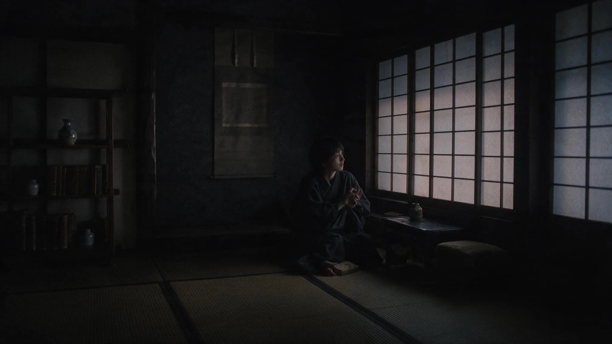
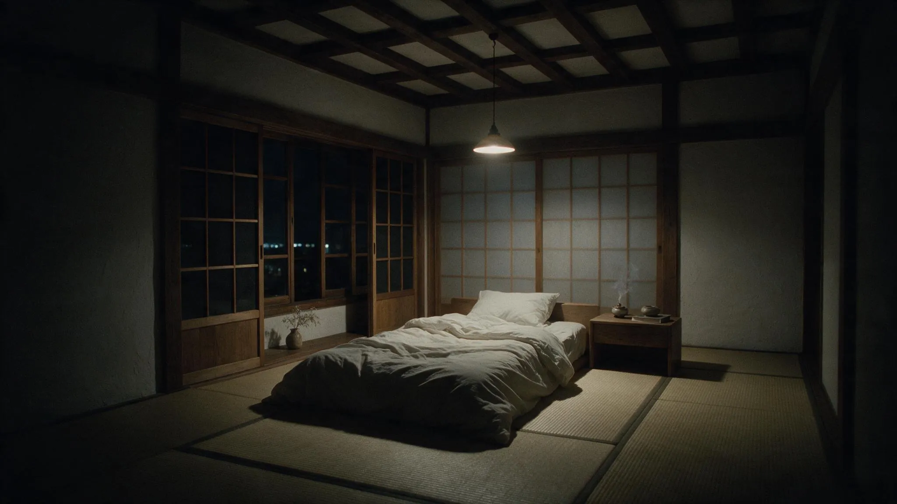
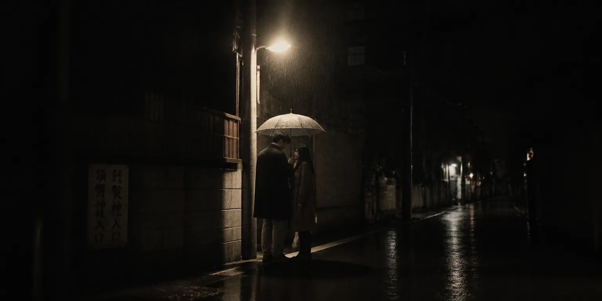

01
倒數
房門前，倒轉的齒輪讓我們寸步難行。時間仍在倒數，我們帶著遺憾，面對不得不踏出的那一步。

我們一邊學會妥協，一邊把真正想要的生活藏好。十首歌記下那些不漂亮、卻確實走過來的日子，也留一點位置給喘息、相遇和還沒完成的答案。
房門前，倒轉的齒輪讓我們寸步難行。時間仍在倒數，我們帶著遺憾，面對不得不踏出的那一步。
拖著行李離開家，我們在陌生街道上尋找方向。走過兩千多公里，仍記得有人牽掛，也有人等我們回頭。

趕在打卡前穿過人群，熟悉的笑臉卻漸漸走遠。我們到不得不放手時，才發現曾經擁有那麼多。

燈還沒修，冷氣仍在漏水。我們暫時留著房間的狼藉，也留著離去之人的痕跡，慢慢學著與孤單共存。

戴著面具過完白晝，換來夜裡僅剩的幾小時。窗外街景不斷後退，我們卻仍停在原地，分不清自由與將就。

人生本來就會出錯、偏離、失望，甚至有些事情真的就是做得不夠好——但那又怎樣？允許不完美存在，本身就是繼續生活的一種方式。

像一滴雨，我們在升起與墜落間反覆懷疑自己。盼下一場大雨過後，能接受平凡，也找到自己的軌跡。

即便未來的道路佈滿荊棘，甚至被迫在震動的地面上繼續往前，我們仍相信相遇的瞬間。雖然曾經的願望被埋葬，但這份連結將成為彼此在黑暗街道上的避風塘。

即使世界很糟糕，還是會有一些值得被珍惜的事物。儘管世界糟糕如荒漠，我們仍要緊握命運，不再沈默。即使在生命走到盡頭、眼淚掉落的時刻，也要帶著執著與溫柔與珍惜的事物一同走下去，直到最後一分鐘。

不要讓生存，成為你存在於這個世界的唯一理由。世上還有值得珍惜的事物，好好把握、好好珍惜、好好活著。

2023 年，我們把迷惘唱出來。第一張專輯的 12 軌、完整歌詞與演出照片，放在另一頁慢慢看。
歌詞壓克力板、鑰匙圈和兩款 T-Shirt，集中放在周邊頁。